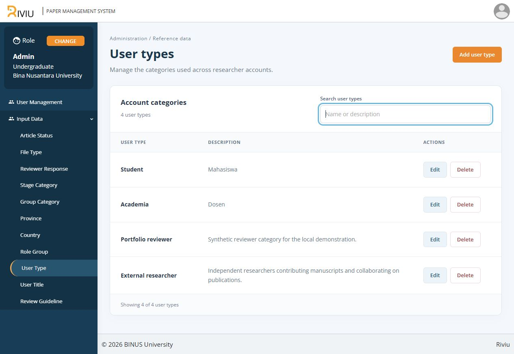
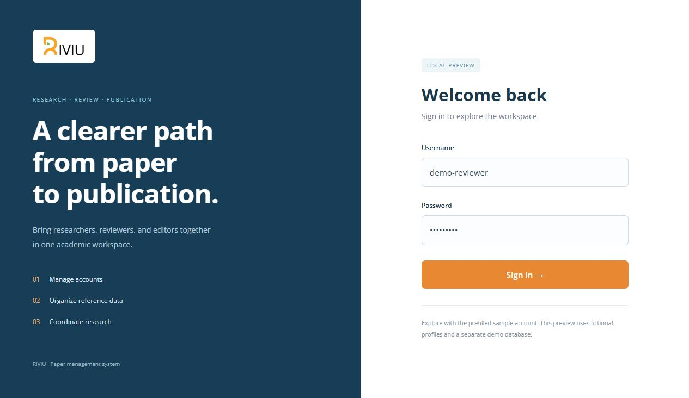
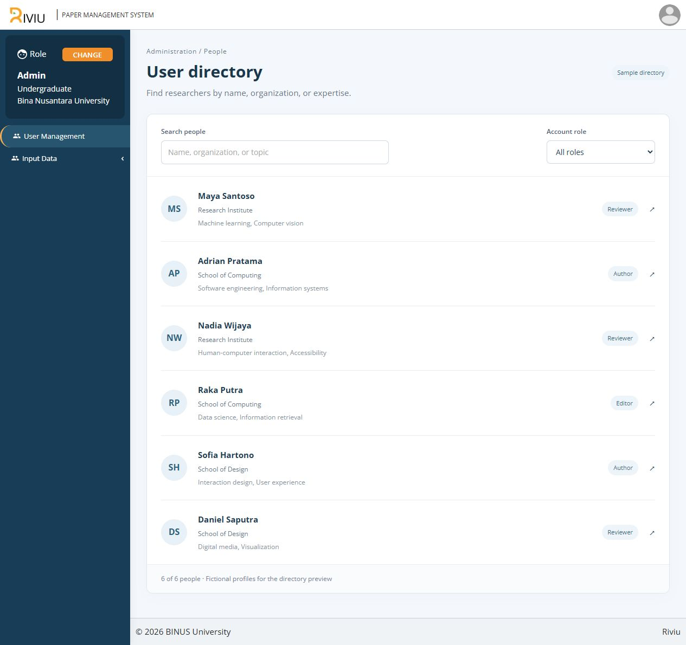
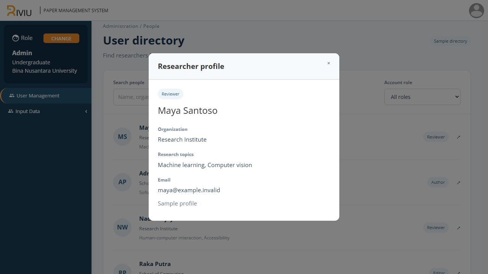
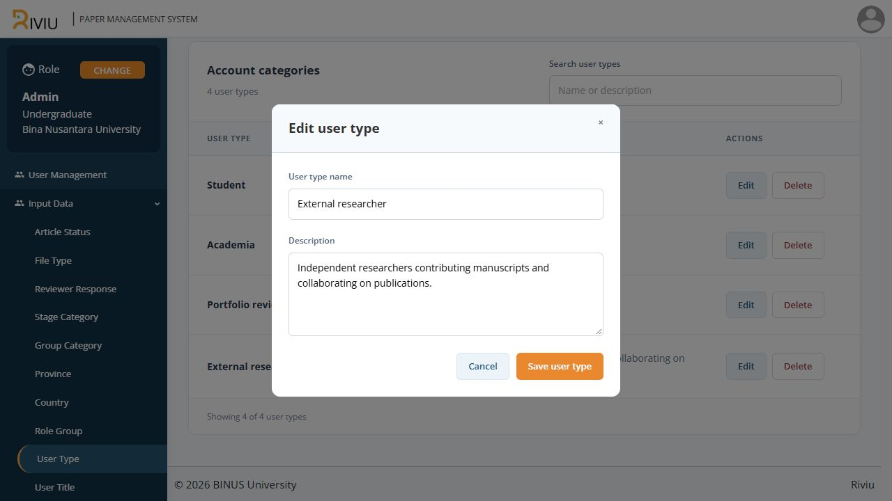
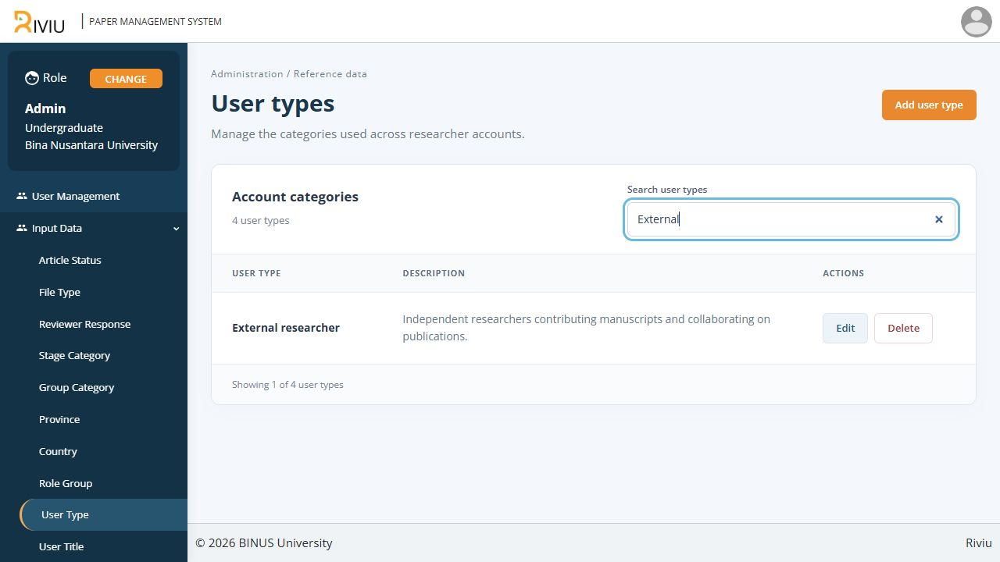
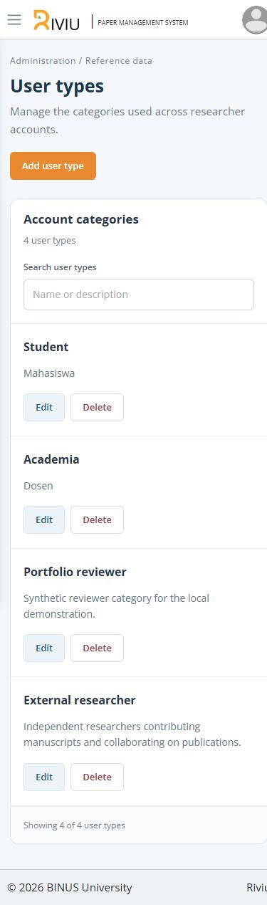

Riviu.
An academic workspace with role-based navigation and clear administration tools.
The idea
Built during my BINUS web development internship, Riviu supports an academic-writing and revision-tracking pilot. I developed React and .NET features, integrated services, and handed the project over to the next intern team.
What I built
Role navigation, a searchable researcher directory, and connected user-type administration with validated forms, edit actions, duplicate handling, and deletion confirmation. The refreshed interface adapts to desktop and mobile.
The local preview connects sign-in and user-type management to .NET services and a separate SQL Server demo database. The researcher directory uses fictional profiles. Institutional SSO and the full manuscript workflow are outside this preview.
Explore the features






